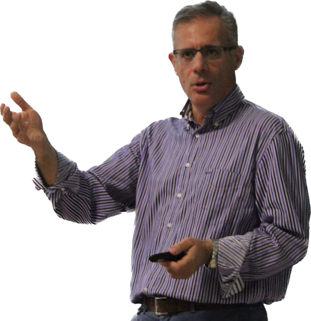
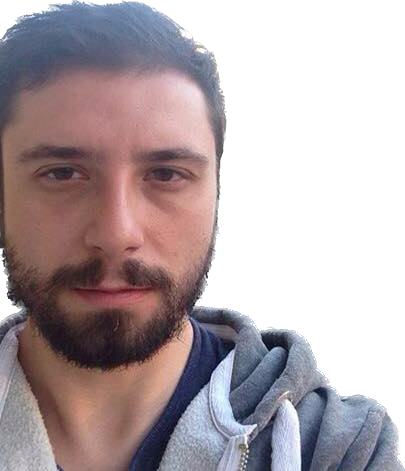
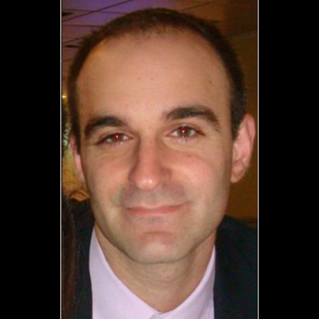
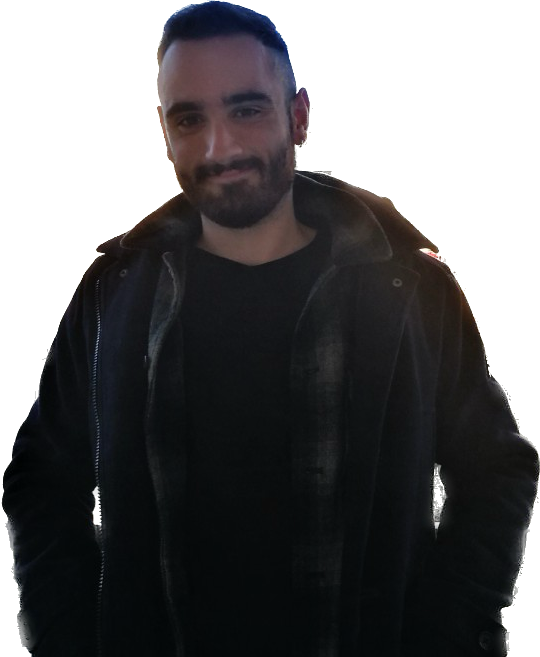
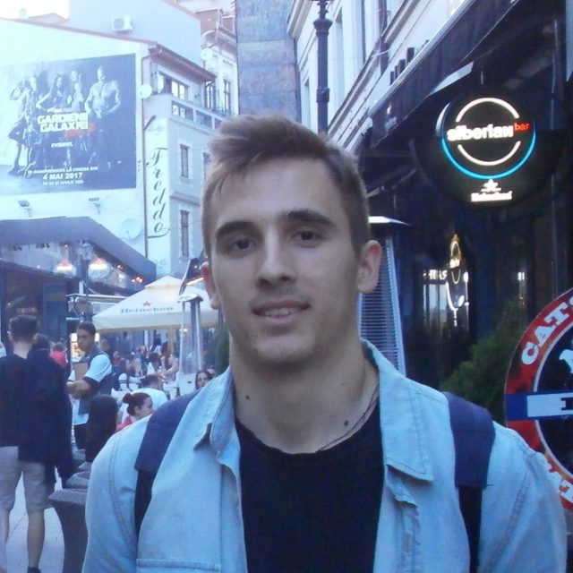
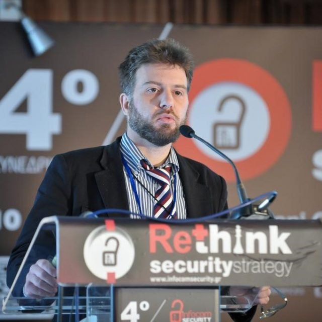

Our Team

Sotiris Nikoletseas
Lab Director Professor at the Computer Engineering and Informatics Department of Patras University, Greece.
Pantelis Tzamalis
AIoT Group Leader Post-doc Researcher at the Computer Engineering and Informatics Department of Patras University, Greece.
Gabriel Filios
Edge Intelligence Group Leader Post-doc Researcher at the Computer Engineering and Informatics Department of Patras University, Greece.
Christoforos Raptopoulos
Foundations of Networks and Intelligent Systems Group Leader Professor at the Department of Mathematics of Patras University, Greece.Panagiotis Kapetanidis
Research Engineer PHD Student at the Computer Engineering and Informatics Department of Patras University, Greece.
Fotis Kalioras
Research Engineer PHD Student at the Computer Engineering and Informatics Department of Patras University, Greece.George Kontogiannis
Research Engineer PHD Student at the Computer Engineering and Informatics Department of Patras University, Greece.
Stefanos Panagiotou
Research Engineer PHD Student at the Computer Engineering and Informatics Department of Patras University, Greece.Minas Gadalla
Research Engineer PHD Student at the Computer Engineering and Informatics Department of Patras University, Greece.Kyriakos Giannopoulos
Research Engineer PHD Student at the Computer Engineering and Informatics Department of Patras University, Greece.External Collaborators

Vasileios Vlachos
Assistant Professor at the University of Thessaly.Past Alumni
- Dr. Constantinos Marios Angelopoulos (data aggregation in mobile sensor networks). Was awarded his PhD in 2013. Now Associate Professor in the UK.
- Dr. Theofanis P. Raptis (Rechargeable sensor networks). Was awarded his PhD in 2016. Now post-doctoral researcher at National Research Council, Institute of Informatics and Telematics, Italy.
- Dr. Ioannis Katsidimas (Wireless power transfer protocols, IoT systems for structural health). Now at the Mechanical Engineering Department, University of Patras.
- Dr. Adelina Madhja (Wireless Power Transfer Algorithms). Was awarded her PhD in 2018. Now in industry, UK.
- Dr. Athanassios Kinalis (PhD Thesis: “Design, Simulation and Evaluation of Data Propagation Protocols in Wireless Sensor Networks”), 2009. Now in Amazon, Toronto.
- Dr. Dimitra Patroumpa (sink mobility in sensor networks). She was awarded her PhD in 2013. Now in industry.
- Dr. Georgios Mylonas (PhD Thesis: "Design, Simulation and Experimental Development of Data Propagation Protocols and Applications in Wireless Sensor Networks"), 2009. Now post-doctoral researcher at CTI.
- MSc. Andreas Bardoutsos (AIoT for smart health). Now in industry.
- MSc. Manolis Kerimakis (wireless power transfer, energy harvesting). Now in industry.
- MSc. Ioannis Tsenempis (sensor networks, energy management). Now in industry.
- MSc. Constantinos Timpilis (sensor networks, industrial IoT). Now in industry.
- MSc. Dimitris Tsolovos (Wireless power transfer). Awarded his MSc in 2016. Now in France.
- MSc. Panagiotis Aleksandrou (IoT testbeds and systems). Awarded his MSc in 2016. Now in France.
- MSc. Christina Pavlopoulou (Feature extraction via mobile sensing). Now PhD student in the USA.
- MSc. Michalis Drakoulelis (Virtual IoT testbeds, 2019). Now in industry.
- MSc. Christos Zachiotis (IoT mobility and portability). Now in industry.
- MSc. Konstantinos Veroutis (IoT systems federation). Now in industry in Zürich.
- MSc. Maria Rapti (Feature extraction via mobile sensing). Now in industry in Zürich.
- MSc. Dionysios Efstathiou (mobile sensor networks). Started October 2009. Was awarded his MSc in 2011. Now in indrustry.
- MSc. Andreas Koutsopoulos (obstacle avoidance algorithms in sensor networks). Started October 2008. Was awarded his MSc in 2010. Now in indrustry.
- MSc. Charilaos Eftymiou (Design and Analysis of Energy Efficient Smart Dust Algorithms). Awarded his MSc Degree in December 2004.
Post-doctoral Researchers
- Dr. Olivier Powell, University of Geneva (2006-2007)
- Dr Ioannis Chatzigiannakis (2002-2007).
Visiting Researchers
- Dr Luminita Moraru, University of Geneva, (2008-2009).
- Dr. Olivier Powell, University of Geneva (2006-2007)
- Dr. M.D.R. Arroyo-Valles, University Carlos III de Madrid, Spain (2008).
Contact Us
Address
AN. Kazantzaki Str 1, Patras University Campus, 26504 Rion, Patras, GreecePhone Number